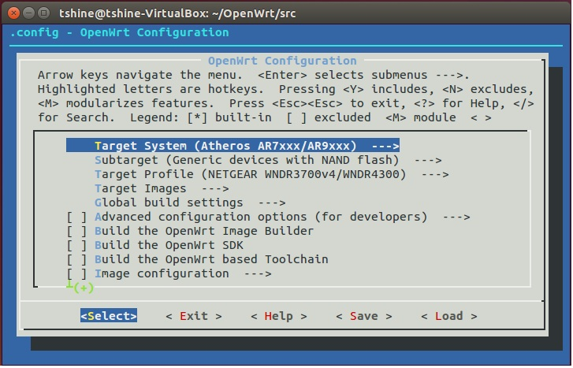

网上的三方固件虽然很方便，但总感觉有点乱，很多功能用不到，甚至还有各种三方链接……而且比起三方固件，自己编译的OpenWrt固件才更安全不是吗？况且编译门槛也不高，只要一台安装有Linux系统的PC机Or虚拟机，可能还要翻一点点墙即可。
编译环境：Ubuntu 14.04 x86
源码版本：14.07 branch (Barrier Breaker)
1、安装编译环境
终端输入：
1 | sudo apt-get update |
2、下载OpenWrt源码
首到到OpenWrt官网下载源码，具体位置在： 网站首页导航栏->Development，点击How to download the OpenWrt source，在这个页面下可以看到下载方法。 这里选择下载14.07 branch (Barrier Breaker)版本，所以在终端执行：
1 | git clone git://git.openwrt.org/14.07/openwrt.git |
然后等待源码下载完成
3、更新/安装软件包
进入上面下载好的OpenWrt源码目录 更新软件包
1 | ./scripts/feeds update -a |
安装软件包
1 | ./scripts/feeds install -a |
4、配置编译选项
1 | make menuconfig |
会现编译配置界面，如下

操作说明：上下按键移动列表光标左右按键移动底部菜单光标
列表中行首带有 “[ ]” 表示这个选项可以被选中，按Space改变编译模式，*：表示该模块直接编译到核心中M：该模块以被核心支持，可以后再安装空白：不支持该模块
列表中行末带有 “—>” 表示这个选项带有2级列表，按Enter进入（要保证底部菜单<Select>被选中）
这里只做编译验证，所以只选择几个必要项即可。以我的路由器“网件4300”为例：
Target System -> Atheros AR7xxx/AR9xxx
Subtarget -> Generic devices with NAND flash
Target Profile -> NETGEAR WNDR3700v4/WNDR4300
配置好了以后，选中底部菜单的
由于编译只认源码目录下的“.config”文件，我们还要将要编译的配置保存为.config。再次选中底部菜单的
然后选中底部菜单的
5、编译
一切准备妥当以后，就可以开始编译了 首先对编译环境进行检测
1 | make defconfig |
make defconfig表示对配置进行检测 make prereq表示对编译环境进行检测 如果没有提示错误的话就可以开始执行编译了
1 | make V=s |
接下来要等待好几个小时，还要看网速情况，如果中途发现缺少什么下载不下来，复制文件名称，到下面两个网站搜索并下载到源码的dl目录下，也可以到其他相关镜像下载。再次在终端执行make V=s即可。
http://dev.gateworks.com/sources/
http://143.129.80.193/openwrt/dl/
编译完成以后就会在源码的bin目录下生成配置的固件！